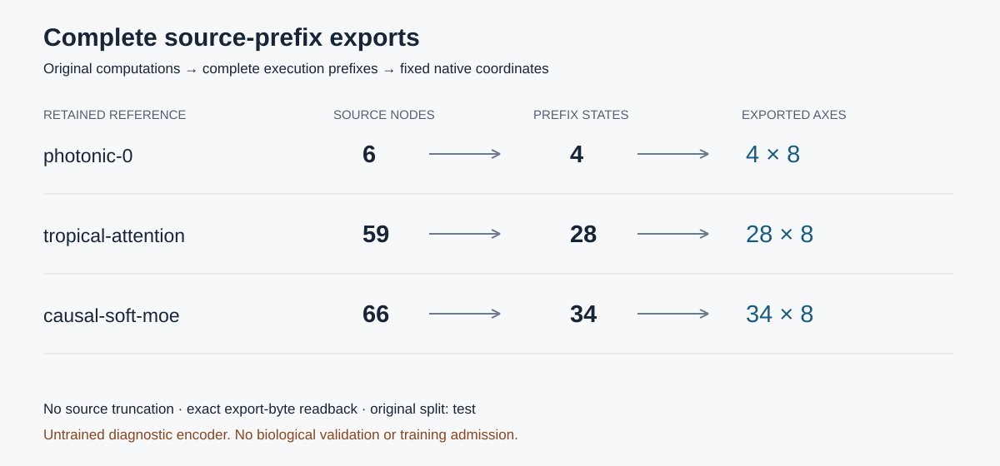

Implementation evidence · 13 November 2026
Every supported source prefix.
No truncated trajectory.
Inspect complete execution-prefix embeddings from three retained numerical references. Source identity, direction, original split and exact exported coordinates remain inspectable.
Frozen prefix coordinates
Arrows connect parent execution prefixes. Coordinate values are native embedding units, with an untrained frozen encoder here—not physical distances. Select a prefix using the menu, point, or keyboard.
Selected prefix
| Axis | Exact decimal readback |
|---|
Facts available at this prefix
No sibling or later fact is shown in this list. This viewer is reference inspection, not a policy input.
Complete source accounting
| Reference | Nodes | State axes |
|---|---|---|
| photonic-0 | 6 | 4 × 8 |
| tropical-attention | 59 | 28 × 8 |
| causal-soft-moe | 66 | 34 × 8 |

Raw JSON payload capacity and aggregate prefix work are not full-attention context lengths. The source encoder preserves all supported tree branches; merged DAG histories and censored branches still require separate representations.
Implementation methods and remaining requirements · Inspectable figure data